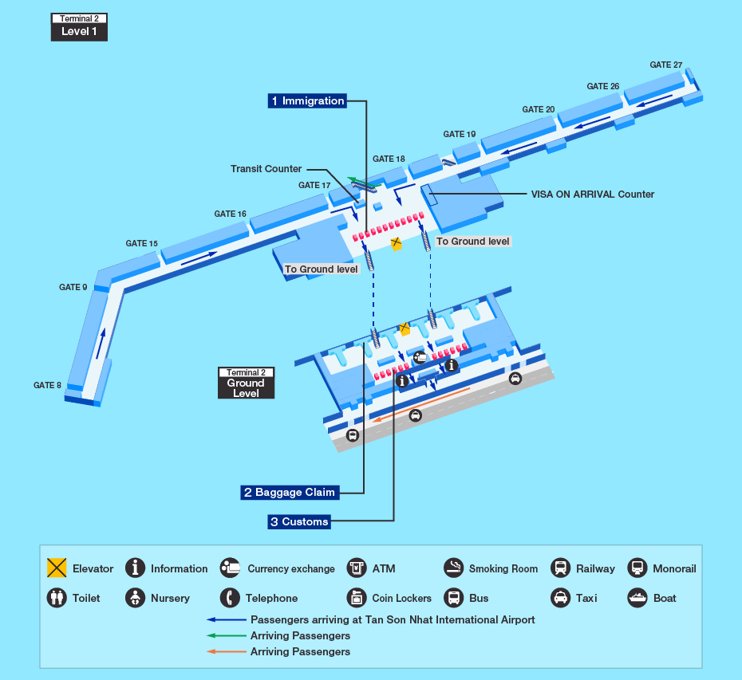

机场平面图
机场平面图
新山国际机场运营两个航站楼，T1航站楼是越南国内航线，T2航站楼是国际航线。
T2航站楼和T1航站楼是分开的两幢楼，之间有一定距离，两栋航站楼外部条有顶棚长廊一样的路连接（在室外要从T2到达大厅大门出去），且T2出口有指示牌标明 domestic 直接指向T1的方向，沿着这条长廊走不到10分钟就可以到达T1。
 机场交通
机场交通
 公交汽车
公交汽车
胡志明新山一机场离市中心9公里左右，可以选乘152路公交车（票价：5000盾；下午6点结束运营）。
 出租车
出租车
从机场到市区有几种出租车可以选择：
*排队等候出租车
等候出租车的位置位于航站楼一楼的大门左边。排队等候上车。请上车后示意司机开启计费仪表。从机场前往市区的大多数酒店的费用在15万-17万越南盾，另外您需要额外支付1万越南盾作为机场附加费用。
*麦林出租车
麦林出租车柜台位于您清关后的右手边，您可以在这里预订一辆出租车并支付车费，然后柜台工作人员会带领您离开机场前往出租车站点，为您安排车辆离开机场前往市中心。截止至2014年4月，从机场到市中心的单程费用约为30万越南盾，此费用已经包含所有收费，您无需再额外支付其他费用。
*其他的士预约柜台
清关后还有不少其他公司的的士预约柜台，他们也会在机场内提供预付出租车服务。
在国内航班候机楼外一家名为Sasco的公司拥有机场出租车的特许经营权，这是唯一一家可以在机场内载客的出租车公司，他们的汽车停靠点位于候机楼非常醒目的位置，当您离开航站楼后便可看到。
微信
公众号


置顶